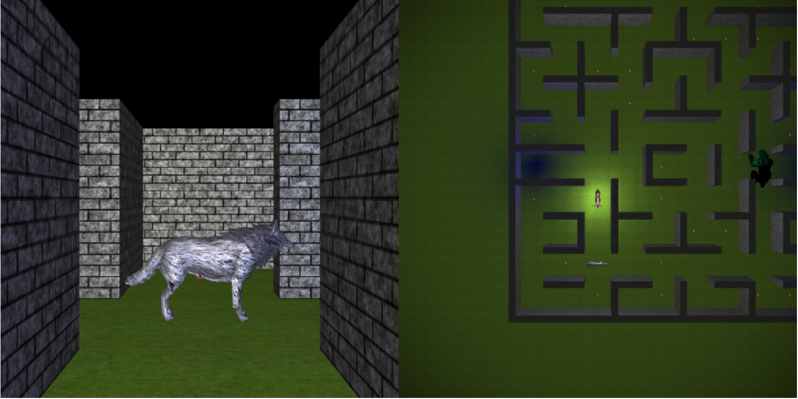
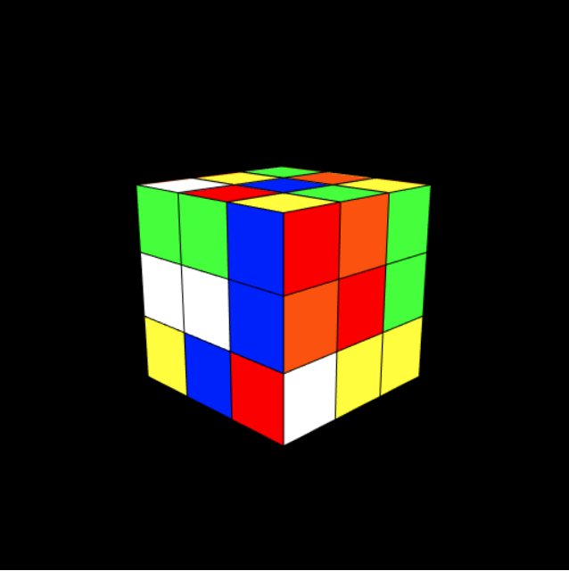
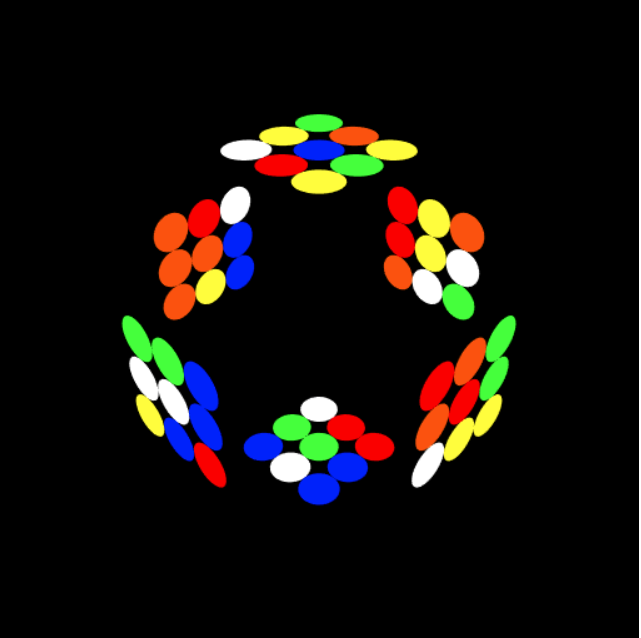
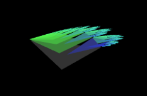
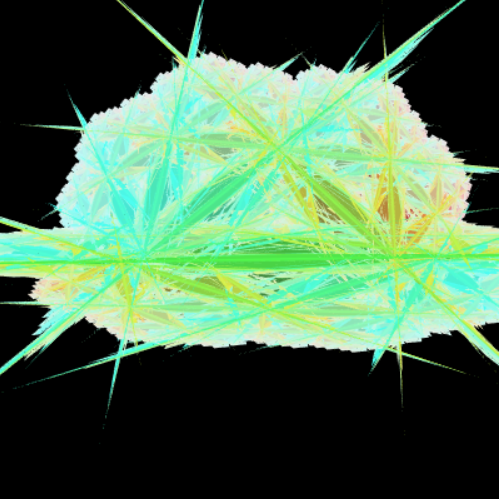

Welcome to my portfolio!
My name is Christian Wendlandt.
I'm a graduate of UW-Oshkosh with a bachelor's in Computer Science and Mathematics.
I like to play video games in my free time, so (naturally) many of my projects are game related.
Taking a concept, figuring out the math to represent it, and then making it interactive is always an enjoyable experience.
I also like teaching others; so being able to do so visually, and then seeing an idea 'click' for them is very satisfying.
Below this is a collection of projects that I've completed or am still working on.
JavaScript projects are hosted right on gitHub, so they should run on modern browsers by just following the links.
Other projects will have varying levels of set up, which is discussed in their README's.
aTAM Simulator
This is a 3D simulator that is programmed with HTML, CSS, and JavaScript; built on top of the WebGL API.
This means that is should be able to run on any modern browser and computer with sufficient graphical processing power.
The abstract Tile Assembly Model (aTAM) is a model used by researchers and mathematicians in the field of self-assembly.
The model takes a tile set as input and then constructs an assembly tile by tile.
Beautiful and intricate constructions can be rendered from simple tile sets.
 Visualizing constructions can be extremely tedious on a chalkboard and research papers are seldom accompanied by more
than a few still images to explain how their constructions work.
Being able to hyperlink directly to a simulator and input tile set would make for a strong academic tool.
A demo is preloaded into the simulation, so even if you don't have your own tile set to input, you can still see how it works.
Visualizing constructions can be extremely tedious on a chalkboard and research papers are seldom accompanied by more
than a few still images to explain how their constructions work.
Being able to hyperlink directly to a simulator and input tile set would make for a strong academic tool.
A demo is preloaded into the simulation, so even if you don't have your own tile set to input, you can still see how it works.
aTAM Simulator
README
Apple Hunt

This was the final project for my computer Graphics Course. The goal of the project was to demonstrate techniques in lighting,
texture mapping, and model manipulation. More specifically, it uses the Lambertian and Gouraud shading models with small additions
for distance lighting. Along with standard rectangular 2D texture mapping, the game also uses cylindrical and spherical mapping for certain models.
The objective of this pacman-esque game is to collect as many apples as possible without getting caught. Although not told to the player,
you can change the second screen's camera angle to get a better look at some of the models or to increase the challenge. These angles
are selected with keys 1 through 6.
Apple Hunt
Rubik's Cube

The purpose of this Computer Graphics project was to demonstrate basic model transformation techniques.
The cube can be scrambled and is fully solvable, though the current control and camera scheme makes that a difficult task.

The application also features a unique display mode that is probably better suited for a 2D screen.
Rubik's Cube
Fractal Painter


Fractal Painter